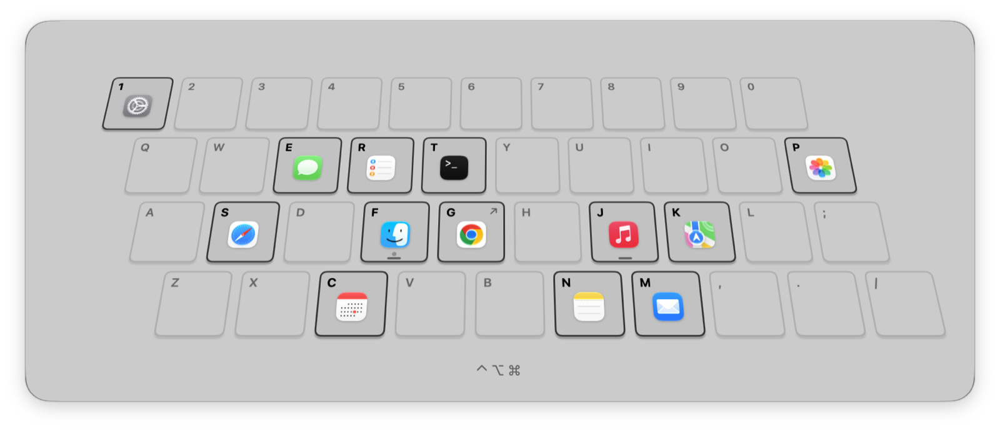

Give every app
its own key
Hold ⌃⌥⌘ and Deft shows your keyboard with an app on each key. Press the key and the app comes forward, usually in about 30 ms.
brew tap hugo-clemente/tapbrew trust --cask hugo-clemente/tap/deftbrew install --cask deft
Free and open sourcemacOS 14 or laterApple silicon and Intel
Animated demo of Deft. Holding Control, Option and Command shows a tilted keyboard with an app on each key. Pressing S brings the browser forward, T brings Terminal forward, and pressing the key of the app already in front hides it.
Step through it with the arrows, or hold ⌥ Option and press S, T, M, N or J to try it yourself. The page uses ⌥ alone so your browser shortcuts stay safe.Step through it with the arrows, or tap the desktop and then a key to try it yourself.
Why not ⌘Tab?
⌘Tab changes its order every time you use it
It sorts apps by when you last used them, so Mail might be one press away in the morning and six by lunch. Spotlight is steadier, but you type a name and wait for results every time. Deft puts Mail on M and leaves it there.
⌘Tab
One to nine presses to reach Mail, depending on what you opened last.
Spotlight
Five keys, plus a glance at the results before you press Return.
Deft
One chord, and it's the same chord every time.
What it does
Nothing on screen until you hold ⌃⌥⌘
A fixed key for every app
Safari stays on S and Mail stays on M. After a few days you stop looking down.
About 30 ms to switch
That's how long an app that's already open takes to come forward. Launching one from scratch takes about 220 ms, and most of that is macOS starting it.
Hold to see the map
Keep ⌃⌥⌘ down for 300 ms and your keyboard appears with every app on it. It goes away when you let go.
Websites, folders and scripts
A key can open a URL or a folder, or run a shell command. It doesn't have to be an app.
Works with your layout and Hyper key
Keys follow their physical position and show your layout's letters, so AZERTY works. So do Hyper keys and Karabiner.
Press again to hide
If the app is already in front, the same key hides it, so one key shows and hides a window.
You find the S key without looking.Give it a week and you'll find Safari the same way.
How it works
Setup takes a couple of minutes
Install
Run the Homebrew command, open Deft, and allow Accessibility when macOS asks.
Assign
Open Settings from the menu bar, click a key, and pick an app, folder, URL or shell command.
Press
Hold ⌃⌥⌘ and press the key. Hold the combo on its own to see the whole map.
Open source
Small enough to read in an afternoon
Deft needs Accessibility access to see your shortcut. That's a lot to ask from an app you found five minutes ago, so here's what it does with it. The code is on GitHub if you'd rather check yourself.

FAQ
Questions before you install
Why does Deft need Accessibility access?
macOS won't let an app see keys pressed in other apps unless you allow Accessibility. Deft uses it to spot your shortcut. It doesn't log keys and makes no network requests.
macOS says it can't verify the developer. Is Deft safe?
macOS blocks the first launch because Deft isn't notarized by Apple yet. Go to System Settings, then Privacy & Security, and click Open Anyway. The source code and the workflow that builds each release are both public.
Why does Homebrew ask me to trust the tap?
Homebrew only loads casks from taps outside its own once you trust them. brew trust --cask hugo-clemente/tap/deft trusts this one cask and nothing else in the tap.
Does it work with my keyboard layout?
Yes. Deft matches keys by physical position and labels them with your current layout, so AZERTY and QWERTZ users see their own letters.
Can I use a Hyper key or Karabiner?
Yes. Pick any mix of ⌃ ⌥ ⇧ ⌘ in Settings. Deft ignores Shift unless it's part of your combo, so a Karabiner Hyper key works without extra setup.
What if the app is already open?
Deft brings it forward. If it's already in front, the same key hides it.
Can a key open a website or a folder?
Yes. A key can launch an app, open a URL or folder, or run a shell command.
Which Macs does it run on?
Any Mac on macOS 14 Sonoma or later, Apple silicon or Intel. On macOS 26 the overlay uses Liquid Glass.
Will it slow my Mac down?
No. Deft waits on one keyboard event tap and does nothing until you press your combo. It doesn't poll or run anything in the background.
How do I update?
Run brew upgrade --cask --greedy deft. Deft isn't notarized yet, so macOS asks for Accessibility again after each update.
How do I uninstall it?
Run brew uninstall --cask --zap deft. That removes the app and its settings.
Is it really free?
Yes. It's MIT licensed, and there's no account or paid version.
Try it for a week
It's free and there's no account. If it isn't for you, one brew command removes it.
brew tap hugo-clemente/tapbrew trust --cask hugo-clemente/tap/deftbrew install --cask deft